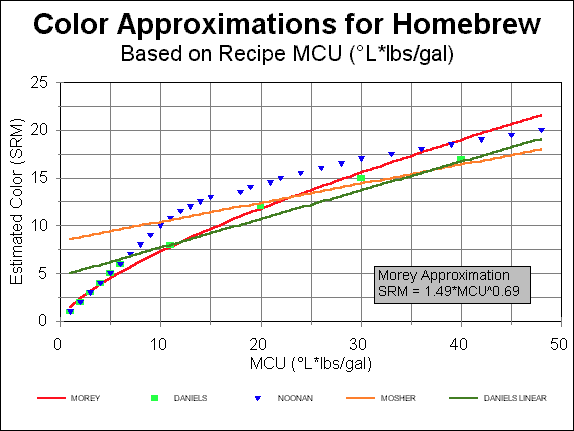

Approximating SRM Beer Color of Homebrew Based on Recipe Formulation
One of the most challenging aspects of “brewing to style” for home brewers is trying to achieve a color within the specified range for the particular class. Home brewers have usually been left to rely on experience or trial and error to design recipes that will fit the style.
Color ranges for the recognized beer styles defined by the AHA and BJCP are given in terms of SRM (Standard Reference Method). Measurement of actual SRM is not practical for the amateur brewer. Thus, Malt Color Units (MCU) have been used to quantify color often. MCU is the Lovibond rating of the ingredient multiplied by its weight in pounds divided by the beer’s volume in US gallons. The dilemma is that apparent color in terms of SRM diverges from MCU.
\[ MCU = \frac{^o L(ovibond)}{gallons} \]
Many factors impact beer color; therefore, making an exact prediction is impossible. Some factors that effect beer color are: Recipe (grains/malts), quality of crush, mash procedure (temperature(s)), mash time, mash pH, boil time, yeast, and many more. Of all the factors, the malt/grain bill has the greatest impact on color thus we can ignore the other contributors and still make a good approximation. Several individuals have studied beer color and developed models to help predict it.
LINEAR MODELS
The most common method states that SRM is equivalent to MCU. This is probably the oldest approximation. The weakness of this model as documented by several authors is that color in SRM diverges from MCU for values greater than 10.
\[SRM = MCU\]
Randy Mosher developed a model based on commercial beers whose recipes and color were known. His model is expressed as:
\[SRM = (0.3*MCU) + 4.7\]
Using this approximation, minimum beer color is 4.7. This is not realistic and the model should only be used for beer with MCU greater than 7.
Ray Daniels did some similar work based on homebrewed beers. Color of samples left over from home brew competitions were measured using SRM and the MCUs were calculated from the recipes submitted by the entrants. Daniels’ model differs from Mosher’s and suggests that homebrew is generally darker than commercial beers. His approximation is:
\[SRM = (0.2*MCU) + 8.4\]
Like Mosher’s model, the formula has a minimum color that is not reasonable. Consequently the formula should only be used for beers with MCU greater than 11.
POWER MODEL
Inspired by Ray Daniels’ three part series printed Brewing Techniques in the SEP/OCT and NOV/DEC 1995 issues, I set out to develop a single model that could apply for the complete brewing spectrum and account for the non-linear behavior observed by so many.
Since I did not have raw data to work with, I based my work on five assumptions:
SRM is approximately equal to MCU for values from 0 to 10.
Homebrew is generally darker than commercial beer.
Base on the previous qualitative postulate, I assumed that Ray Daniels’ predicted relationship exists for beers with color greater than 10.
Since Mosher’s equation predicts darker color than Daniels’ model for values of MCU greater than 37, I assumed that Mosher’s approximation governed beer color for all values more than 37 MCUs.
Difference in color for beers greater than 40 SRM are essentially impossible to detect visually; therefore, I limited the analysis to SRM of 50 and less.
Using these assumptions, data was created for my analysis. I tried various curve fitting techniques to find the best approximation to the assumed relationship. In the end, the power model was found best to represent the assumed curve. The resulting model was:
\[SRM = 1.49*MCU^{0.69}\]
This model eliminates the two major limitations of linear models in my opinion. The minimum color is zero, so the model can be used for lighter color beers. The model accounts for decreased color contribution from malt as the beer gets darker or the “law of diminishing returns.”
A graphical representation of my model along with Daniels’ and Mosher’s linear approximations can be found in figure 1. Also plotted is tabular data that can be found in Ray Daniels’ Designing Great Beers (Daniels 1998, pg 61) pg 61, and Greg Noonan’s New Brewing Lager Beer (Noonan 2003, pg 206).

Some interesting observations from the Home Brew Digest (HBD) based on work by Kyle Druey. Kyle fitted power curves to Daniels’ and Noonan’s data. These power curves along with my model all predict beer color of 40 SRM around 126 MCUs (Morey at 117 MCUs; Daniels at 136 MCUs; Noonan at 126 MCUs).
The Druey power models fitted to Daniels’ and Noonan’s data are:
\[ SRM = 1.73*MCU^{0.64} - 0.27 \text{ (Daniels)} \]
\[ SRM = 15.03*MCU^{0.27} -15.53 \text{ (Noonan)} \]
MALT EXTRACTS
Predicting color for extract recipes provides an additional challenge. Where do you find Lovibond ratings for extracts? While this information is not always available, you may use the following as approximations in the table 1 below. The data was originally printed in Ray Daniels’ article in the NOV/DEC 1995 issue of Brewing Techniques:
| Color | °L | Extract Type |
|---|---|---|
| Pale Golden | 3 - 4 | Munton & Fison spray-dry malt extract (light) |
| Golden | 5 - 6 | Alexander pale extract syrup |
| Light Amber | 6 - 7 | Munton & Fison extract syrup (pale) |
| Light Amber | 6 - 7 | Laaglander dried malt extract |
| Amber | 8 - 9 | John Bull unhopped light syrup |
| Amber | 8 - 9 | Coopers unhopped light syrup |
| Amber | 8 - 9 | Northwestern gold malt extract syrup |
| Amber | 8 - 9 | Northwestern gold dry malt extract |
CONCLUSION
I have been using my power model since 1996 good results. I now find that my beers are within the range I would expect for the style I’m brewing. Sure, sometimes they are slightly darker or lighter than I envisioned but the days of gross color errors are gone.
As previously stated, exact color predictions are not possible. Due to the many factors ignored by these simplified models, we should treat all color predictions as approximations. Actual color deviations of 20% or more from the prediction can be expected.
What method is best for you? That is for you to decide. I suggest you try the models and find the one that gives results you expect for the style you are brewing. With these simple tools, you can tailor your recipes to achieve color within the desired range.